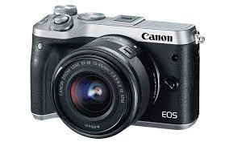
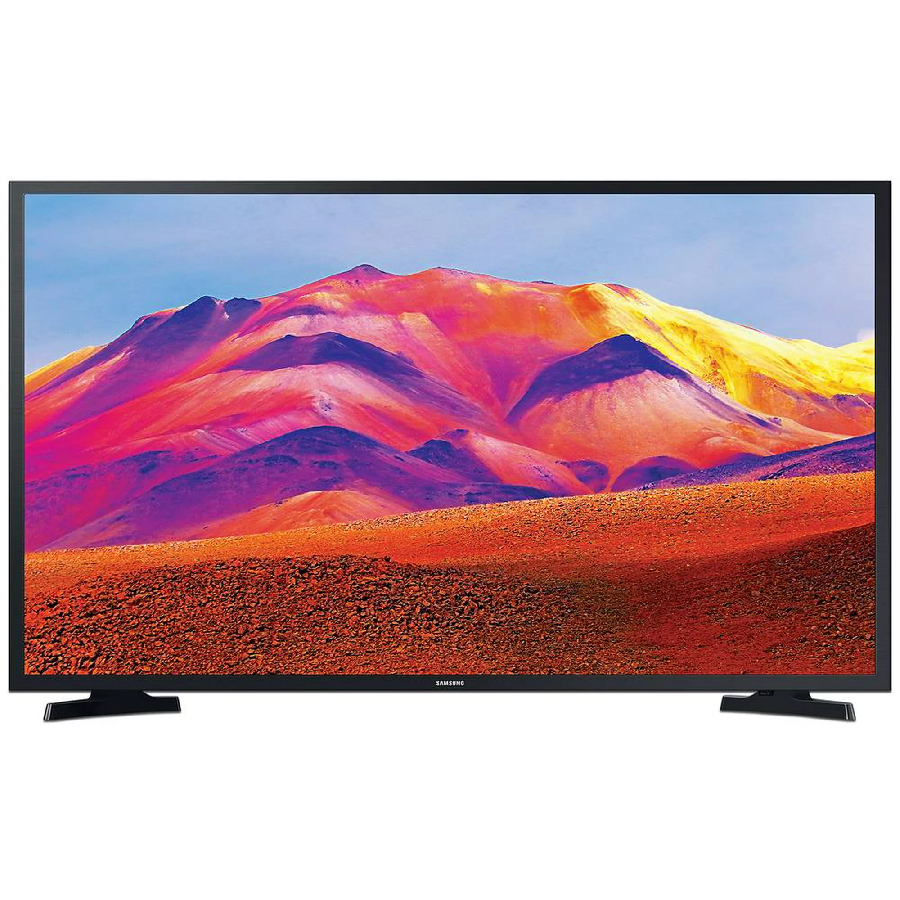
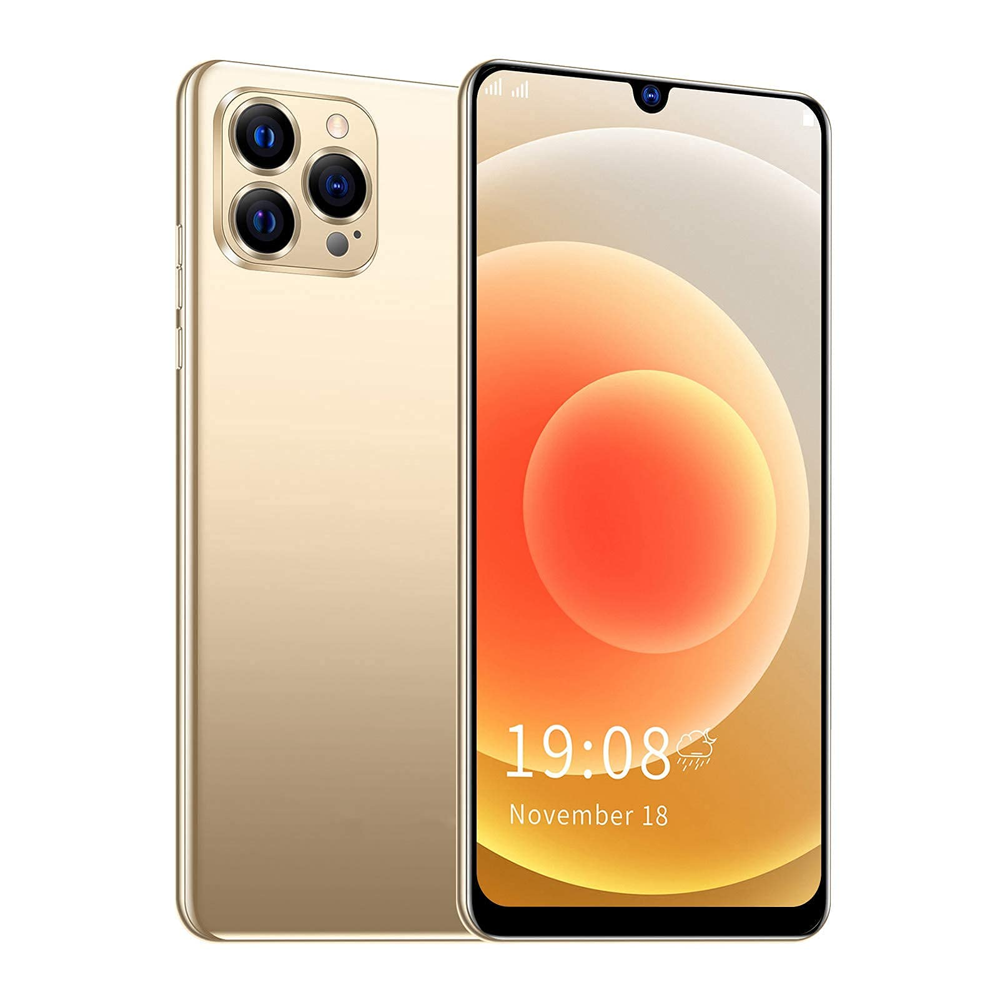

Consulta deseada:
| Imagen |
Datos |
 |
- RAM: 16 GB DDR4 a 3000 MHz
- CPU: Intel Core i5-4670K (4 núcleos, 4 hilos, frecuencia base de 3.4 GHz,
frecuencia máxima turbo de 3.8 GHz)
- GPU: NVIDIA GeForce GTX 1660 Ti con 6 GB de VRAM GDDR6
- Almacenamiento: SSD de 500 GB SATA III
- Disco Duro Adicional: HDD de 1 TB a 7200 RPM
- Placa Base: ASUS Z87-A (Socket LGA 1150, chipset Z87)
|
|  |
- Modelo: Canon EOS M7
- Sensor de Imagen: APS-C CMOS de 24 megapíxeles
- Procesador de Imagen: DIGIC X
- Sistema de Enfoque: Detección de fase Dual Pixel CMOS AF II
- ISO: 100-25600 (ampliable hasta 51200)
- Estabilización de Imagen: Estabilización en el cuerpo de 5 ejes
- Disparo Continuo: 10 cuadros por segundo
- Grabación de Video: 4K a 60 fps, 1080p a 120 fps
- Pantalla Táctil: Pantalla LCD inclinable de 3.2 pulgadas
|
|  |
- Modelo: LG Smart TV UltraHD 4K LGS-55U800
- Tamaño de Pantalla: 55 pulgadas
- Resolución: 4K UHD (3840 x 2160)
- Tipo de Pantalla: Panel OLED
- Tecnología de Retroiluminación: OLED Autoiluminado
- Procesador: LG Alpha 9 Gen 3
- HDR: Dolby Vision, HDR10, HLG
- Frecuencia de Actualización: 120 Hz
- Sistema Operativo: webOS 6.0
- Control por Voz: Control remoto con reconocimiento de voz
|
|  |
- Modelo: iPhone 12
- Pantalla: Super Retina XDR OLED de 6.1 pulgadas
- Resolución: 2532 x 1170 píxeles
- Procesador: Chip A14 Bionic con arquitectura de 5 nm
- Memoria RAM: 4 GB
- Almacenamiento Interno: Disponible en 64 GB, 128 GB y 256 GB
- Cámaras: Sistema de cámara dual de 12 MP (gran angular y ultra gran angular)
- Modos de Cámara: Night mode, Deep Fusion, Smart HDR 3
- Grabación de Video: 4K a 60 fps, HDR Dolby Vision
- Redes: 5G compatible (sub-6 GHz y mmWave)
- Sistema Operativo: iOS 14
|